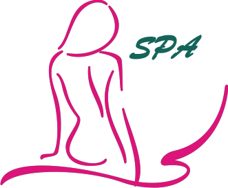

Home
Los encargados le deseamos una calida bienvenida a nuestro nuevo establecimiento de SPA "L'E Mademoiselle". Donde podrán disfrutar los diferentes servicios que ofrecemos en este SPA. Aquí contamos con servicios como Sauna,Masajes con pierdas Vólcaincas Y Baño reparador con Hidromasaje incluido. Los precios son muy accesibles para el cliente, aceptamos efectivo Y las siguentes tarjetas de crédito: Visa, MasterCard, HSBC, BBVA. Con las tarjetas HSBC Y Visa podrán aprovechar un 20% de descuento los días Martes Y Jueves.
Baño reparador con Hidromaje incluidoEs uno de los grandes placeres, sumergirte en un spa de hidromasaje por un precio saludable para tu billetera, rejuveciendo el cutis y por ahí tu vida. |
Masajes con piedras volcanicasCuando solicites este servicio podrás probar estos masajes relajantes con piedras volcanicas único en este país. Este masaje consta de piedras calientes que serán muy relajante para tu piel, y a la vez sentiras menos presiones en tu cuerpo porque es un tratamiento altamente efectivo. Te harán volver una y otra vez. |
SaunaEl Sauna elimina las toxinas y aumenta las defensas. Abre los poros y elimina del cuerpo metales pesados(Plomo, Mercurio, Zinc, Niquel y Cadmio.) También elimina el acohol, nicotina, sodio, ácido sulfúrico y combate el colesterol. Aunque también perdemos minerales,podemos recuperar con una bebida istónica. Se puede llegar aperder 2 litros de agua junto a las toxinas que eliminamos. |
VISITANOS EN NUESTRAS REDES SOCIALES: